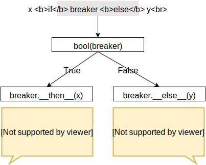

PEP 532 – A circuit breaking protocol and binary operators
- Author:
- Alyssa Coghlan <ncoghlan at gmail.com>, Mark E. Haase <mehaase at gmail.com>
- Status:
- Deferred
- Type:
- Standards Track
- Created:
- 30-Oct-2016
- Python-Version:
- 3.8
- Post-History:
- 05-Nov-2016
Table of Contents
- PEP Deferral
- Abstract
- Relationship with other PEPs
- Specification
- The circuit breaking protocol (
if-else) - Circuit breaking operators (binary
ifand binaryelse) - Overloading logical inversion (
not) - Forcing short-circuiting behaviour
- Circuit breaking identity comparisons (
isandis not) - Truth checking comparisons
- None-aware operators
- Rich chained comparisons
- Other conditional constructs
- Style guide recommendations
- The circuit breaking protocol (
- Rationale
- Risks and concerns
- Design Discussion
- Implementation
- Acknowledgements
- References
- Copyright
PEP Deferral
Further consideration of this PEP has been deferred until Python 3.8 at the earliest.
Abstract
Inspired by PEP 335, PEP 505, PEP 531, and the related discussions, this PEP
proposes the definition of a new circuit breaking protocol (using the
method names __then__ and __else__) that provides a common underlying
semantic foundation for:
- conditional expressions:
LHS if COND else RHS - logical conjunction:
LHS and RHS - logical disjunction:
LHS or RHS - the None-aware operators proposed in PEP 505
- the rich comparison chaining model proposed in PEP 535
Taking advantage of the new protocol, it further proposes that the definition
of conditional expressions be revised to also permit the use of if and
else respectively as right-associative and left-associative general
purpose short-circuiting operators:
- Right-associative short-circuiting:
LHS if RHS - Left-associative short-circuiting:
LHS else RHS
In order to make logical inversion (not EXPR) consistent with the above
changes, it also proposes the introduction of a new logical inversion protocol
(using the method name __not__).
To force short-circuiting of a circuit breaker without having to evaluate
the expression creating it twice, a new operator.short_circuit(obj)
helper function will be added to the operator module.
Finally, a new standard types.CircuitBreaker type is proposed to decouple
an object’s truth value (as used to determine control flow) from the value
it returns from short-circuited circuit breaking expressions, with the
following factory functions added to the operator module to represent
particularly common switching idioms:
- switching on
bool(obj):operator.true(obj) - switching on
not bool(obj):operator.false(obj) - switching on
obj is value:operator.is_sentinel(obj, value) - switching on
obj is not value:operator.is_not_sentinel(obj, value)
Relationship with other PEPs
This PEP builds on an extended history of work in other proposals. Some of the key proposals are discussed below.
PEP 531: Existence checking protocol
This PEP is a direct successor to PEP 531, replacing the existence checking
protocol and the new ?then and ?else syntactic operators defined there
with the new circuit breaking protocol and adjustments to conditional
expressions and the not operator.
PEP 505: None-aware operators
This PEP complements the None-aware operator proposals in PEP 505, by offering an underlying protocol-driven semantic framework that explains their short-circuiting behaviour as highly optimised syntactic sugar for particular uses of conditional expressions.
Given the changes proposed by this PEP:
LHS ?? RHSwould roughly beis_not_sentinel(LHS, None) else RHSEXPR?.attrwould roughly beEXPR.attr if is_not_sentinel(EXPR, None)EXPR?[key]would roughly beEXPR[key] if is_not_sentinel(EXPR, None)
In all three cases, the dedicated syntactic form would be optimised to avoid
actually creating the circuit breaker instance and instead implement the
underlying control flow directly. In the latter two cases, the syntactic form
would also avoid evaluating EXPR twice.
This means that while the None-aware operators would remain highly specialised and specific to None, other sentinel values would still be usable through the more general protocol-driven proposal in this PEP.
PEP 335: Overloadable Boolean operators
PEP 335 proposed the ability to overload the short-circuiting and and
or operators directly, with the ability to overload the semantics of
comparison chaining being one of the consequences of that change. The
proposal in an earlier version of this PEP to instead handle the element-wise
comparison use case by changing the semantic definition of comparison chaining
is drawn directly from Guido’s rejection of PEP 335 [1].
However, initial feedback on this PEP indicated that the number of different proposals that it covered made it difficult to read, so that part of the proposal has been separated out as PEP 535.
PEP 535: Rich comparison chaining
As noted above, PEP 535 is a proposal to build on the circuit breaking protocol
defined in this PEP in order to expand the rich comparison support introduced
in PEP 207 to also handle comparison chaining operations like
LEFT_BOUND < VALUE < RIGHT_BOUND.
Specification
The circuit breaking protocol (if-else)
Conditional expressions (LHS if COND else RHS) are currently interpreted
as an expression level equivalent to:
if COND:
_expr_result = LHS
else:
_expr_result = RHS
This PEP proposes changing that expansion to allow the checked condition to implement a new “circuit breaking” protocol that allows it to see, and potentially alter, the result of either or both branches of the expression:
_cb = COND
_type_cb = type(cb)
if _cb:
_expr_result = LHS
if hasattr(_type_cb, "__then__"):
_expr_result = _type_cb.__then__(_cb, _expr_result)
else:
_expr_result = RHS
if hasattr(_type_cb, "__else__"):
_expr_result = _type_cb.__else__(_cb, _expr_result)
As shown, interpreter implementations would be required to access only the protocol method needed for the branch of the conditional expression that is actually executed. Consistent with other protocol methods, the special methods would be looked up via the circuit breaker’s type, rather than directly on the instance.
Circuit breaking operators (binary if and binary else)
The proposed name of the protocol doesn’t come from the proposed changes to
the semantics of conditional expressions. Rather, it comes from the proposed
addition of if and else as general purpose protocol driven
short-circuiting operators to complement the existing True and False
based short-circuiting operators (or and and, respectively) as well
as the None based short-circuiting operator proposed in PEP 505 (??).
Together, these two operators would be known as the circuit breaking operators.
In order to support this usage, the definition of conditional expressions in
the language grammar would be updated to make both the if clause and
the else clause optional:
test: else_test ['if' or_test ['else' test]] | lambdef
else_test: or_test ['else' test]
Note that we would need to avoid the apparent simplification to
else_test ('if' else_test)* in order to make it easier for compiler
implementations to correctly preserve the semantics of normal conditional
expressions.
The definition of the test_nocond node in the grammar (which deliberately
excludes conditional expressions) would remain unchanged, so the circuit
breaking operators would require parentheses when used in the if
clause of comprehensions and generator expressions just as conditional
expressions themselves do.
This grammar definition means precedence/associativity in the otherwise
ambiguous case of expr1 if cond else expr2 else expr3 resolves as
(expr1 if cond else expr2) else epxr3. However, a guideline will also be
added to PEP 8 to say “don’t do that”, as such a construct will be inherently
confusing for readers, regardless of how the interpreter executes it.
The right-associative circuit breaking operator (LHS if RHS) would then
be expanded as follows:
_cb = RHS
_expr_result = LHS if _cb else _cb
While the left-associative circuit breaking operator (LHS else RHS) would
be expanded as:
_cb = LHS
_expr_result = _cb if _cb else RHS
The key point to note in both cases is that when the circuit breaking expression short-circuits, the condition expression is used as the result of the expression unless the condition is a circuit breaker. In the latter case, the appropriate circuit breaker protocol method is called as usual, but the circuit breaker itself is supplied as the method argument.
This allows circuit breakers to reliably detect short-circuiting by checking
for cases when the argument passed in as the candidate expression result is
self.
Overloading logical inversion (not)
Any circuit breaker definition will have a logical inverse that is still a
circuit breaker, but inverts the answer as to when to short circuit the
expression evaluation. For example, the operator.true and
operator.false circuit breakers proposed in this PEP are each other’s
logical inverse.
A new protocol method, __not__(self), will be introduced to permit circuit
breakers and other types to override not expressions to return their
logical inverse rather than a coerced boolean result.
To preserve the semantics of existing language optimisations (such as
eliminating double negations directly in a boolean context as redundant),
__not__ implementations will be required to respect the following
invariant:
assert not bool(obj) == bool(not obj)
However, symmetric circuit breakers (those that implement all of __bool__,
__not__, __then__ and __else__) would only be expected to respect
the full semantics of boolean logic when all circuit breakers involved in the
expression are using a consistent definition of “truth”. This is covered
further in Respecting De Morgan’s Laws.
Forcing short-circuiting behaviour
Invocation of a circuit breaker’s short-circuiting behaviour can be forced by using it as all three operands in a conditional expression:
obj if obj else obj
Or, equivalently, as both operands in a circuit breaking expression:
obj if obj
obj else obj
Rather than requiring the using of any of these patterns, this PEP proposes
to add a dedicated function to the operator to explicitly short-circuit
a circuit breaker, while passing other objects through unmodified:
def short_circuit(obj)
"""Replace circuit breakers with their short-circuited result
Passes other input values through unmodified.
"""
return obj if obj else obj
Circuit breaking identity comparisons (is and is not)
In the absence of any standard circuit breakers, the proposed if and
else operators would largely just be unusual spellings of the existing
and and or logical operators.
However, this PEP further proposes to provide a new general purpose
types.CircuitBreaker type that implements the appropriate short
circuiting logic, as well as factory functions in the operator module
that correspond to the is and is not operators.
These would be defined in such a way that the following expressions produce
VALUE rather than False when the conditional check fails:
EXPR if is_sentinel(VALUE, SENTINEL)
EXPR if is_not_sentinel(VALUE, SENTINEL)
And similarly, these would produce VALUE rather than True when the
conditional check succeeds:
is_sentinel(VALUE, SENTINEL) else EXPR
is_not_sentinel(VALUE, SENTINEL) else EXPR
In effect, these comparisons would be defined such that the leading
VALUE if and trailing else VALUE clauses can be omitted as implied in
expressions of the following forms:
# To handle "if" expressions, " else VALUE" is implied when omitted
EXPR if is_sentinel(VALUE, SENTINEL) else VALUE
EXPR if is_not_sentinel(VALUE, SENTINEL) else VALUE
# To handle "else" expressions, "VALUE if " is implied when omitted
VALUE if is_sentinel(VALUE, SENTINEL) else EXPR
VALUE if is_not_sentinel(VALUE, SENTINEL) else EXPR
The proposed types.CircuitBreaker type would represent this behaviour
programmatically as follows:
class CircuitBreaker:
"""Simple circuit breaker type"""
def __init__(self, value, bool_value):
self.value = value
self.bool_value = bool(bool_value)
def __bool__(self):
return self.bool_value
def __not__(self):
return CircuitBreaker(self.value, not self.bool_value)
def __then__(self, result):
if result is self:
return self.value
return result
def __else__(self, result):
if result is self:
return self.value
return result
The key characteristic of these circuit breakers is that they are ephemeral: when they are told that short circuiting has taken place (by receiving a reference to themselves as the candidate expression result), they return the original value, rather than the circuit breaking wrapper.
The short-circuiting detection is defined such that the wrapper will always be removed if you explicitly pass the same circuit breaker instance to both sides of a circuit breaking operator or use one as all three operands in a conditional expression:
breaker = types.CircuitBreaker(foo, foo is None)
assert operator.short_circuit(breaker) is foo
assert (breaker if breaker) is foo
assert (breaker else breaker) is foo
assert (breaker if breaker else breaker) is foo
breaker = types.CircuitBreaker(foo, foo is not None)
assert operator.short_circuit(breaker) is foo
assert (breaker if breaker) is foo
assert (breaker else breaker) is foo
assert (breaker if breaker else breaker) is foo
The factory functions in the operator module would then make it
straightforward to create circuit breakers that correspond to identity
checks using the is and is not operators:
def is_sentinel(value, sentinel):
"""Returns a circuit breaker switching on 'value is sentinel'"""
return types.CircuitBreaker(value, value is sentinel)
def is_not_sentinel(value, sentinel):
"""Returns a circuit breaker switching on 'value is not sentinel'"""
return types.CircuitBreaker(value, value is not sentinel)
Truth checking comparisons
Due to their short-circuiting nature, the runtime logic underlying the and
and or operators has never previously been accessible through the
operator or types modules.
The introduction of circuit breaking operators and circuit breakers allows that logic to be captured in the operator module as follows:
def true(value):
"""Returns a circuit breaker switching on 'bool(value)'"""
return types.CircuitBreaker(value, bool(value))
def false(value):
"""Returns a circuit breaker switching on 'not bool(value)'"""
return types.CircuitBreaker(value, not bool(value))
LHS or RHSwould be effectivelytrue(LHS) else RHSLHS and RHSwould be effectivelyfalse(LHS) else RHS
No actual change would take place in these operator definitions, the new circuit breaking protocol and operators would just provide a way to make the control flow logic programmable, rather than hardcoding the sense of the check at development time.
Respecting the rules of boolean logic, these expressions could also be expanded in their inverted form by using the right-associative circuit breaking operator instead:
LHS or RHSwould be effectivelyRHS if false(LHS)LHS and RHSwould be effectivelyRHS if true(LHS)
None-aware operators
If both this PEP and PEP 505’s None-aware operators were accepted, then the
proposed is_sentinel and is_not_sentinel circuit breaker factories
would be used to encapsulate the notion of “None checking”: seeing if a value
is None and either falling back to an alternative value (an operation known
as “None-coalescing”) or passing it through as the result of the overall
expression (an operation known as “None-severing” or “None-propagating”).
Given these circuit breakers, LHS ?? RHS would be roughly equivalent to
both of the following:
is_not_sentinel(LHS, None) else RHSRHS if is_sentinel(LHS, None)
Due to the way they inject control flow into attribute lookup and subscripting operations, None-aware attribute access and None-aware subscripting can’t be expressed directly in terms of the circuit breaking operators, but they can still be defined in terms of the underlying circuit breaking protocol.
In those terms, EXPR?.ATTR[KEY].SUBATTR() would be semantically
equivalent to:
_lookup_base = EXPR
_circuit_breaker = is_not_sentinel(_lookup_base, None)
_expr_result = _lookup_base.ATTR[KEY].SUBATTR() if _circuit_breaker
Similarly, EXPR?[KEY].ATTR.SUBATTR() would be semantically equivalent
to:
_lookup_base = EXPR
_circuit_breaker = is_not_sentinel(_lookup_base, None)
_expr_result = _lookup_base[KEY].ATTR.SUBATTR() if _circuit_breaker
The actual implementations of the None-aware operators would presumably be optimised to skip actually creating the circuit breaker instance, but the above expansions would still provide an accurate description of the observable behaviour of the operators at runtime.
Rich chained comparisons
Refer to PEP 535 for a detailed discussion of this possible use case.
Other conditional constructs
No changes are proposed to if statements, while statements, comprehensions, or generator expressions, as the boolean clauses they contain are used entirely for control flow purposes and never return a result as such.
However, it’s worth noting that while such proposals are outside the scope of this PEP, the circuit breaking protocol defined here would already be sufficient to support constructs like:
def is_not_none(obj):
return is_sentinel(obj, None)
while is_not_none(dynamic_query()) as result:
... # Code using result
and:
if is_not_none(re.search(pattern, text)) as match:
... # Code using match
This could be done by assigning the result of
operator.short_circuit(CONDITION) to the name given in the as clause,
rather than assigning CONDITION to the given name directly.
Style guide recommendations
The following additions to PEP 8 are proposed in relation to the new features introduced by this PEP:
- Avoid combining conditional expressions (
if-else) and the standalone circuit breaking operators (ifandelse) in a single expression - use one or the other depending on the situation, but not both. - Avoid using conditional expressions (
if-else) and the standalone circuit breaking operators (ifandelse) as part ofifconditions inifstatements and the filter clauses of comprehensions and generator expressions.
Rationale
Adding new operators
Similar to PEP 335, early drafts of this PEP focused on making the existing
and and or operators less rigid in their interpretation, rather than
proposing new operators. However, this proved to be problematic for a few key
reasons:
- the
andandoroperators have a long established and stable meaning, so readers would inevitably be surprised if their meaning now became dependent on the type of the left operand. Even new users would be confused by this change due to 25+ years of teaching material that assumes the current well-known semantics for these operators - Python interpreter implementations, including CPython, have taken advantage
of the existing semantics of
andandorwhen defining runtime and compile time optimisations, which would all need to be reviewed and potentially discarded if the semantics of those operations changed - it isn’t clear what names would be appropriate for the new methods needed to define the protocol
Proposing short-circuiting binary variants of the existing if-else ternary
operator instead resolves all of those issues:
- the runtime semantics of
andandorremain entirely unchanged - while the semantics of the unary
notoperator do change, the invariant required of__not__implementations means that existing expression optimisations in boolean contexts will remain valid. __else__is the short-circuiting outcome forifexpressions due to the absence of a trailingelseclause__then__is the short-circuiting outcome forelseexpressions due to the absence of a leadingifclause (this connection would be even clearer if the method name was__if__, but that would be ambiguous given the other uses of theifkeyword that won’t invoke the circuit breaking protocol)
Naming the operator and protocol
The names “circuit breaking operator”, “circuit breaking protocol” and “circuit breaker” are all inspired by the phrase “short circuiting operator”: the general language design term for operators that only conditionally evaluate their right operand.
The electrical analogy is that circuit breakers in Python detect and handle short circuits in expressions before they trigger any exceptions similar to the way that circuit breakers detect and handle short circuits in electrical systems before they damage any equipment or harm any humans.
The Python level analogy is that just as a break statement lets you
terminate a loop before it reaches its natural conclusion, a circuit breaking
expression lets you terminate evaluation of the expression and produce a result
immediately.
Using existing keywords
Using existing keywords has the benefit of allowing the new operators to
be introduced without a __future__ statement.
if and else are semantically appropriate for the proposed new protocol,
and the only additional syntactic ambiguity introduced arises when the new
operators are combined with the explicit if-else conditional expression
syntax.
The PEP handles that ambiguity by explicitly specifying how it should be handled by interpreter implementers, but proposing to point out in PEP 8 that even though interpreters will understand it, human readers probably won’t, and hence it won’t be a good idea to use both conditional expressions and the circuit breaking operators in a single expression.
Naming the protocol methods
Naming the __else__ method was straightforward, as reusing the operator
keyword name results in a special method name that is both obvious and
unambiguous.
Naming the __then__ method was less straightforward, as there was another
possible option in using the keyword-based name __if__.
The problem with __if__ is that there would continue to be many cases
where the if keyword appeared, with an expression to its immediate right,
but the __if__ special method would not be invoked. Instead, the
bool() builtin and its underlying special methods (__bool__,
__len__) would be invoked, while __if__ had no effect.
With the boolean protocol already playing a part in conditional expressions and
the new circuit breaking protocol, the less ambiguous name __then__ was
chosen based on the terminology commonly used in computer science and
programming language design to describe the first clause of an if
statement.
Making binary if right-associative
The precedent set by conditional expressions means that a binary
short-circuiting if expression must necessarily have the condition on the
right as a matter of consistency.
With the right operand always being evaluated first, and the left operand not being evaluated at all if the right operand is true in a boolean context, the natural outcome is a right-associative operator.
Naming the standard circuit breakers
When used solely with the left-associative circuit breaking operator,
explicit circuit breaker names for unary checks read well if they start with
the preposition if_:
operator.if_true(LHS) else RHS
operator.if_false(LHS) else RHS
However, incorporating the if_ doesn’t read as well when performing
logical inversion:
not operator.if_true(LHS) else RHS
not operator.if_false(LHS) else RHS
Or when using the right-associative circuit breaking operator:
LHS if operator.if_true(RHS)
LHS if operator.if_false(RHS)
Or when naming a binary comparison operation:
operator.if_is_sentinel(VALUE, SENTINEL) else EXPR
operator.if_is_not_sentinel(VALUE, SENTINEL) else EXPR
By contrast, omitting the preposition from the circuit breaker name gives a result that reads reasonably well in all forms for unary checks:
operator.true(LHS) else RHS # Preceding "LHS if " implied
operator.false(LHS) else RHS # Preceding "LHS if " implied
not operator.true(LHS) else RHS # Preceding "LHS if " implied
not operator.false(LHS) else RHS # Preceding "LHS if " implied
LHS if operator.true(RHS) # Trailing " else RHS" implied
LHS if operator.false(RHS) # Trailing " else RHS" implied
LHS if not operator.true(RHS) # Trailing " else RHS" implied
LHS if not operator.false(RHS) # Trailing " else RHS" implied
And also reads well for binary checks:
operator.is_sentinel(VALUE, SENTINEL) else EXPR
operator.is_not_sentinel(VALUE, SENTINEL) else EXPR
EXPR if operator.is_sentinel(VALUE, SENTINEL)
EXPR if operator.is_not_sentinel(VALUE, SENTINEL)
Risks and concerns
This PEP has been designed specifically to address the risks and concerns raised when discussing PEPs 335, 505 and 531.
- it defines new operators and adjusts the definition of chained comparison
(in a separate PEP) rather than impacting the existing
andandoroperators - the proposed new operators are general purpose short-circuiting binary
operators that can even be used to express the existing semantics of
andandorrather than focusing solely and inflexibly on identity checking againstNone - the changes to the
notunary operator and theisandis notbinary comparison operators are defined in such a way that control flow optimisations based on the existing semantics remain valid
One consequence of this approach is that this PEP on its own doesn’t produce
much in the way of direct benefits to end users aside from making it possible
to omit some common None if prefixes and else None suffixes from
particular forms of conditional expression.
Instead, what it mainly provides is a common foundation that would allow the
None-aware operator proposals in PEP 505 and the rich comparison chaining
proposal in PEP 535 to be pursued atop a common underlying semantic framework
that would also be shared with conditional expressions and the existing and
and or operators.
Design Discussion
Protocol walk-through
The following diagram illustrates the core concepts behind the circuit breaking protocol (although it glosses over the technical detail of looking up the special methods via the type rather than the instance):
We will work through the following expression:
>>> def is_not_none(obj):
... return operator.is_not_sentinel(obj, None)
>>> x if is_not_none(data.get("key")) else y
is_not_none is a helper function that invokes the proposed
operator.is_not_sentinel types.CircuitBreaker factory with None as
the sentinel value. data is a container (such as a builtin dict
instance) that returns None when the get() method is called with an
unknown key.
We can rewrite the example to give a name to the circuit breaker instance:
>>> maybe_value = is_not_none(data.get("key"))
>>> x if maybe_value else y
Here the maybe_value circuit breaker instance corresponds to breaker
in the diagram.
The ternary condition is evaluated by calling bool(maybe_value), which is
the same as Python’s existing behavior. The change in behavior is that instead
of directly returning one of the operands x or y, the circuit breaking
protocol passes the relevant operand to the circuit breaker used in the
condition.
If bool(maybe_value) evaluates to True (i.e. the requested
key exists and its value is not None) then the interpreter calls
type(maybe_value).__then__(maybe_value, x). Otherwise, it calls
type(maybe_value).__else__(maybe_value, y).
The protocol also applies to the new if and else binary operators,
but in these cases, the interpreter needs a way to indicate the missing third
operand. It does this by re-using the circuit breaker itself in that role.
Consider these two expressions:
>>> x if data.get("key") is None
>>> x if operator.is_sentinel(data.get("key"), None)
The first form of this expression returns x if data.get("key") is None,
but otherwise returns False, which almost certainly isn’t what we want.
By contrast, the second form of this expression still returns x if
data.get("key") is None, but otherwise returns data.get("key"), which
is significantly more useful behaviour.
We can understand this behavior by rewriting it as a ternary expression with an explicitly named circuit breaker instance:
>>> maybe_value = operator.is_sentinel(data.get("key"), None)
>>> x if maybe_value else maybe_value
If bool(maybe_value) is True (i.e. data.get("key") is None),
then the interpreter calls type(maybe_value).__then__(maybe_value, x). The
implementation of types.CircuitBreaker.__then__ doesn’t see anything that
indicates short-circuiting has taken place, and hence returns x.
By contrast, if bool(maybe_value) is False (i.e. data.get("key")
is not None), the interpreter calls
type(maybe_value).__else__(maybe_value, maybe_value). The implementation of
types.CircuitBreaker.__else__ detects that the instance method has received
itself as its argument and returns the wrapped value (i.e. data.get("key"))
rather than the circuit breaker.
The same logic applies to else, only reversed:
>>> is_not_none(data.get("key")) else y
This expression returns data.get("key") if it is not None, otherwise it
evaluates and returns y. To understand the mechanics, we rewrite the
expression as follows:
>>> maybe_value = is_not_none(data.get("key"))
>>> maybe_value if maybe_value else y
If bool(maybe_value) is True, then the expression short-circuits and
the interpreter calls type(maybe_value).__else__(maybe_value, maybe_value).
The implementation of types.CircuitBreaker.__then__ detects that the
instance method has received itself as its argument and returns the wrapped
value (i.e. data.get("key")) rather than the circuit breaker.
If bool(maybe_value) is True, the interpreter calls
type(maybe_value).__else__(maybe_value, y). The implementation of
types.CircuitBreaker.__else__ doesn’t see anything that indicates
short-circuiting has taken place, and hence returns y.
Respecting De Morgan’s Laws
Similar to and and or, the binary short-circuiting operators will
permit multiple ways of writing essentially the same expression. This
seeming redundancy is unfortunately an implied consequence of defining the
protocol as a full boolean algebra, as boolean algebras respect a pair of
properties known as “De Morgan’s Laws”: the ability to express the results
of and and or operations in terms of each other and a suitable
combination of not operations.
For and and or in Python, these invariants can be described as follows:
assert bool(A and B) == bool(not (not A or not B))
assert bool(A or B) == bool(not (not A and not B))
That is, if you take one of the operators, invert both operands, switch to the other operator, and then invert the overall result, you’ll get the same answer (in a boolean sense) as you did from the original operator. (This may seem redundant, but in many situations it actually lets you eliminate double negatives and find tautologically true or false subexpressions, thus reducing the overall expression size).
For circuit breakers, defining a suitable invariant is complicated by the fact that they’re often going to be designed to eliminate themselves from the expression result when they’re short-circuited, which is an inherently asymmetric behaviour. Accordingly, that inherent asymmetry needs to be accounted for when mapping De Morgan’s Laws to the expected behaviour of symmetric circuit breakers.
One way this complication can be addressed is to wrap the operand that would
otherwise short-circuit in operator.true, ensuring that when bool is
applied to the overall result, it uses the same definition of truth that was
used to decide which branch to evaluate, rather than applying bool directly
to the circuit breaker’s input value.
Specifically, for the new short-circuiting operators, the following properties
would be reasonably expected to hold for any well-behaved symmetric circuit
breaker that implements both __bool__ and __not__:
assert bool(B if true(A)) == bool(not (true(not A) else not B))
assert bool(true(A) else B) == bool(not (not B if true(not A)))
Note the order of operations on the right hand side (applying true
after inverting the input circuit breaker) - this ensures that an
assertion is actually being made about type(A).__not__, rather than
merely being about the behaviour of type(true(A)).__not__.
At the very least, types.CircuitBreaker instances would respect this
logic, allowing existing boolean expression optimisations (like double
negative elimination) to continue to be applied.
Arbitrary sentinel objects
Unlike PEPs 505 and 531, the proposal in this PEP readily handles custom sentinel objects:
_MISSING = object()
# Using the sentinel to check whether or not an argument was supplied
def my_func(arg=_MISSING):
arg = make_default() if is_sentinel(arg, _MISSING) # "else arg" implied
Implicitly defined circuit breakers in circuit breaking expressions
A never-posted draft of this PEP explored the idea of special casing the
is and is not binary operators such that they were automatically
treated as circuit breakers when used in the context of a circuit breaking
expression. Unfortunately, it turned out that this approach necessarily
resulted in one of two highly undesirable outcomes:
- the return type of these expressions changed universally from
booltotypes.CircuitBreaker, potentially creating a backwards compatibility problem (especially when working with extension module APIs that specifically look for a builtin boolean value withPyBool_Checkrather than passing the supplied value throughPyObject_IsTrueor using thep(predicate) format in one of the argument parsing functions) - the return type of these expressions became context dependent, meaning that other routine refactorings (like pulling a comparison operation out into a local variable) could have a significant impact on the runtime semantics of a piece of code
Neither of those possible outcomes seems warranted by the proposal in this PEP, so it reverted to the current design where circuit breaker instances must be created explicitly via API calls, and are never produced implicitly.
Implementation
As with PEP 505, actual implementation has been deferred pending in-principle interest in the idea of making these changes.
…TBD…
Acknowledgements
Thanks go to Steven D’Aprano for his detailed critique [2] of the initial draft of this PEP that inspired many of the changes in the second draft, as well as to all of the other participants in that discussion thread [3].
References
Copyright
This document has been placed in the public domain under the terms of the CC0 1.0 license: https://creativecommons.org/publicdomain/zero/1.0/
Source: https://github.com/python/peps/blob/main/peps/pep-0532.rst
Last modified: 2025-02-01 08:59:27 GMT